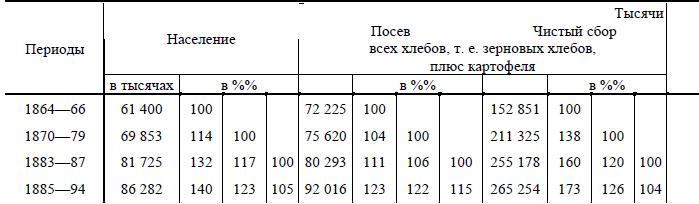
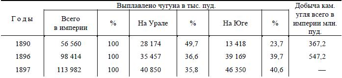
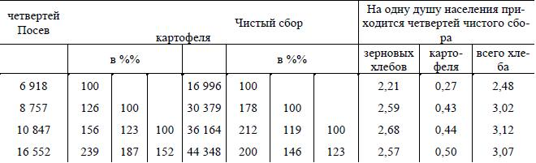

1 Книга В. И. Ленина «Развитие капитализма в России» является итогом огромной исследовательской работы, продолжавшейся свыше трех лет. В. И. Ленин усиленно начал работать над книгой в тюрьме, вскоре после ареста по делу петербургского «Союза борьбы за освобождение рабочего класса» и закончил ее в ссылке в селе Шушенском. Но собирать материалы для своей книги он начал задолго до ее написания.
В первом же письме из тюрьмы, 2 января 6 г., Ленин пишет: «У меня есть план, который меня сильно занимает со времени моего ареста и чем дальше, тем сильнее. Я давно уже занимался одним экономическим вопросом (о сбыте товаров обрабатывающей промышленности внутри страны), подобрал некоторую литературу, составил план его обработки, кое-что даже написал, предполагая издать свою работу отдельной книгой, если она превзойдет размеры журнальной статьи. Бросить эту работу очень бы не хотелось, а теперь, по-видимому, предстоит альтернатива: либо написать ее здесь, либо отказаться вовсе» (Сочинения, 4 изд., том 37, стр. 18).
«Развитие капитализма в России» предназначалось для легальной печати, поэтому Ленин должен был придать своему труду такую форму и так его озаглавить, чтобы царская цензура не задержала издания. «Заглавие более скромное и более тяжеловесное удобно в видах цензурных», – писал Ленин в письме из ссылки (там же, стр. 136).
Приступая к работе над «Развитием капитализма в России», Ленин учитывал, что книга потребует большой кропотливой исследовательской работы, изучения и обработки огромного фактического материала. Набрасывая план или схему будущей книги, Ленин писал:
«Список книг разделен на две части, на которые делится и мое сочинение: А. – Общая теоретическая часть. Она требует меньше книг, так что ее я во всяком случае надеюсь написать, – но больше подготовительной работы. В. – Применение теоретических положений к данным русским. Эта часть требует очень многих книг. Главное затруднение представят: 1) земские издания. Впрочем, часть их у меня есть, часть можно будет выписать (мелкие монографии), часть достать через знакомых статистиков; 2) правительственные издания – труды комиссий, отчеты и протоколы съездов и т. д. Это – важная вещь; доставать их труднее. Некоторые есть в библиотеке ВЭО (Вольное экономическое общество; см. примечание 87. Ред.), кажется, даже большинство» (Сочинения, 4 изд., том 37, стр. 19).
Основные этапы и условия работы над книгой подробно освещены в переписке Ленина с родными, в воспоминаниях ею родных и соратников. А. И. Ульянова-Елизарова отмечает, что Ленин очень много работал в тюрьме: «Он решил использовать питерские библиотеки, чтобы добыть материалы для намеченной себе работы, – материалы, которые, как он знал, в ссылке не получить. И он интенсивно засел за работу, изучив в тюрьме массу источников, сделав массу выписок. Ворохами таскала я ему книги из библиотеки Вольно-экономического общества, Академии Наук и других научных хранилищ» («Пролетарская Революция» № 3, 1924 г., стр. 113).
Ленин работал над книгой и по пути в ссылку. В письме от 15 марта 1897 г. он сообщает, что просмотрел дорогой и собирается отослать из Красноярска «взятые на небольшой срок книги». Во время остановки в Красноярске Ленин использует в местной городской библиотеке и частной библиотеке купца Юдина все полезные книги и комплекты журналов.
В ссылке Ленин продолжал усиленно работать над «Развитием капитализма в России». С момента прибытия в ссылку Ленин был весьма озабочен добыванием и пересылкой нужных ему книг. Об этом он неоднократно пишет в письмах к родным и знакомым. С осени 1897 г. Ленин стал регулярно получать необходимые материалы и развернул работу над новыми источниками, особенно над многочисленными статистическими сборниками. Много книг привезла Ленину весной 1898 г. Н. К. Крупская, переведенная для отбывания ссылки из Уфы в село Шушенское.
За три года работы над «Развитием капитализма в России» Ленин изучил и критически проработал всю литературу по экономике России. В книге упоминается и цитируется свыше 500 различных литературных работ: книг, сборников, исследований, обзоров, статей. Литература, фактически изученная и использованная Лениным, но не вошедшая в перечень упомянутых им источников, во много раз больше. Но и этот перечень дает представление о той колоссальной работе, которую Ленин проделал в процессе изучения развития русского капитализма.
«Развитие капитализма в России» было вчерне закончено в августе 1898 года. Но и после этого Ленин продолжал напряженно работать над книгой. Окончательная отделка рукописи потребовала значительного времени. Работа над рукописью была завершена в конце января 1899 г.
Ленин внимательно прислушивался к замечаниям товарищей и родных, читавших «Развитие капитализма в России» еще в рукописи. Каждая глава книги была переписана в отдельную небольшую тетрадь, которую кроме Н. К. Крупской читали и обсуждали другие социал-демократы, находившиеся тогда в ссылке в Минусинском округе. «Мы были, так сказать, «первыми читателями» «Развития капитализма в России», – вспоминает Г. М. Кржижановский, отбывавший ссылку неподалеку от с. Шушенского, – тщательно прочитывали, что нам присылалось, и со своими замечаниями возвращали Владимиру Ильичу. Он очень считался с такого рода замечаниями».
Ленин дает подробные указания об издании книги, ее формате и печати, указывая, что при выбранном им формате «вся работа уместится на 30 листах, круглым счетом 500 страниц (большее же число страниц было бы уже, вероятно, излишним и обременительным для читателя)» (там же, стр. 130). Он добивался того, чтобы книга была понятной, доходчивой, чтобы таблицы и диаграммы были ярким и наглядным подтверждением выводов автора. В начале марта Ленин получил первые листы книги и остался ими «в высшей степени доволен», как сообщает он в письме родным.
«Развитие капитализма в России» вышло из печати под псевдонимом «Владимир Ильин» в конце марта 1899 г. В газете «Русские Ведомости» 15 апреля 1899 г. было напечатано объявление о выходе книги: «Владимир Ильин. Развитие капитализма в России. Процесс образования внутреннего рынка для крупной промышленности. Цена 2 р. 50 к. Стр. 480".
Ленин получил книгу в начале мая. «Внешним видом книги я очень доволен, – пишет Ленин. – Издана прекрасно…»
Книга «Развитие капитализма в России» вышла в количестве 2400 экземпляров, тираж разошелся очень быстро. Распространялась книга главным образом в кругах социал-демократической интеллигенции, среди учащейся молодежи, а также через посредство пропагандистов и в рабочих кружках.
Буржуазная печать пыталась замолчать научный труд Ленина. Лишь осенью 1899 года появились первые рецензии. На одну из рецензий Ленин дал уничтожающий ответ в статье «Некритическая критика», помещенной в журнале «Научное Обозрение» за май – июнь 1900 года (см. настоящий том, стр. 611–636).
В 1908 году вышло второе издание книги «Развитие капитализма в России» (см. прим. 6). За годы Советской власти (по данным на 1 октября 1957 г.) книга Ленина «Развитие капитализма в России» издавалась 75 раз, общим тиражом 3 372 000 экземпляров на 20 языках народов СССР. Кроме того книга выходила на английском, французском, испанском, китайском, чешском, венгерском, японском, турецком и других иностранных языках.
Часть подготовительных материалов к книге «Развитие капитализма в России», характеризующих объем и методы исследовательской работы Ленина в процессе подготовки этого произведения, опубликована в Ленинском сборнике XXXIII и включена в «Подготовительные материалы к книге «Развитие капитализма в России»».
Книга печатается по второму изданию (1908 года), просмотренному и дополненному Лениным; при этом учтены все замечания автора о первом издании книги 1899 года.↩
2 В феврале или в начале марта 1899 года Ленин получил в ссылке книгу «Die Agrarfrage» («Аграрный вопрос») К. Каутского, бывшего тогда еще марксистом. К этому времени большая часть книги. «Развитие капитализма в России» была уже набрана, и Ленин решил сослаться на работу Каутского в предисловии. 17 (29) марта 1899 года Ленин послал Postscriptum к предисловию. «Если только не поздно, – писал он, – очень бы хотелось напечатать его… Может быть, если даже предисловие уже набрано, возможно набрать еще и Postscriptum?» Добавление к предисловию попало к цензору и подверглось там правке. Об этом Ленин сообщает в письме от 27 апреля 1899 года: «Слышал, что Р. S. в предисловии опоздал, попал в предварительную цензуру и «пострадал» кажется» (Сочинения, 4 изд., том 34, стр. 16). Насколько он пострадал от цензуры, – ввиду отсутствия рукописи, – судить невозможно.
Ленин ссылается на книгу Каутского для того, чтобы подчеркнуть общность основных закономерностей развития капитализма в сельском хозяйстве в Западной Европе и в России, несмотря на все особенности этого процесса в разных странах.↩
3 Третий том «Капитала» К. Маркса появился на немецком языке в 1894 году (предисловие Энгельса к первому изданию третьего тома помечено 4 октября 1894 года). В 1896 году третий том «Капитала» был издан на русском языке в переводе Н. Ф. Даниельсона.↩
4 Во втором издании книги «Развитие капитализма в России» (1908 года) нумерация параграфов изменилась, так как Ленин внес в книгу ряд дополнений. Место, к которому здесь отсылает Ленин, в настоящем издании находится в гл. II, § XII. – (В), стр. 160–161.↩
5 В Обществе для содействия русской промышленности и торговле 17 февраля 1899 года обсуждался доклад на тему:↩
6 Второе издание книги «Развитие капитализма в России» вышло в 1908 году. Извещение об ее выходе было напечатано в марте 1908 года в № 10 «Книжной Летописи». Для второго издания Ленин заново просмотрел текст, устранил опечатки и сделал многочисленные дополнения, а также написал новое предисловие ко второму изданию, датированное июлем 1907 года. Во втором издании «Развития капитализма в России» подцензурные выражения «ученики», «сторонники трудящихся» Ленин заменил прямыми названиями – марксисты, социалисты; упоминания о «новой теории» заменены ссылками на Маркса и марксизм.
Ленин внес в свою книгу значительные дополнения на основании новых статистических данных. Анализу итогов военно-конских переписей за 1896-1900 годы посвящен новый (XI) параграф во второй главе. Ленин приводит дополнительные факты, подтверждающие его прежние выводы о развитии капитализма в России, в частности новые материалы фабрично-заводской статистики; дает анализ итогов всеобщей переписи населения 1897 года, полнее раскрывающий картину классовой структуры России (см. главу VII, § V, стр. 501-506, «Добавление ко второму изданию»).
Во втором издании подведены также итоги борьбы с «легальными марксистами» по основным вопросам, затронутым в «Развития капитализма в России».
Во второе издание книги Ленин внес 24 новых подстрочных примечания (стр. 7, 30, 47–48, 149, 150, 155, 175, 200, 216, 270, 278, 390, 448, 450, 467, 499, 508, 523, 526, 533, 535–536, 550–551, 552, 574–575), 2 новых параграфа (стр. 137–140 и 501–506), одну новую таблицу (стр. 512), написал 8 абзацев нового текста и 3 больших добавления к прежним абзацам (стр. 297–300, 218–219, 220, 289–290) и сделал около 75 мелких добавлений и исправлений.
Ленин не переставал работать над книгой «Развитие капитализма в России» и после выхода второго издания. Об этом свидетельствуют добавления, сделанные Лениным в 1910 или 1911 году на стр. 405 книги второго издания, о распределении фабрик и заводов на группы по числу рабочих в 1908 г. (см. иллюстрацию на стр. 513 настоящего тома).
В предисловии ко второму изданию Ленин говорит о возможной в будущем переработке своего сочинения и указывает, что тогда пришлось бы разделить работу на два тома: первый посвятить анализу предреволюционной экономики России, второй том – изучению итогов и результатов революции.
Изучению итогов и результатов революции 1905–1907 годов посвящен ряд работ Ленина, в том числе «Аграрная программа социал-демократии в первой русской революции 1905–1907 годов», написанная в конце 1907 года (см. Сочинения, 4 изд., т. 13, стр. 195–396).↩
7 К. Маркс цитировал выражение Гейне о своих подголосках: «Я сеял зубы драконов, а сбор жатвы дал мне блох» в IV главе II тома работы «Немецкая идеология» (см. К. Маркс и Ф. Энгельс. Сочинения, том 3, 1955, стр. 514).↩
8 Партия октябристов (или «Союз 77 октября») возникла в России после опубликования манифеста 17 октября 1905 года, в котором напуганный революцией царь обещал дать народу «незыблемые основы гражданской свободы». Партия представляла и защищала интересы крупных промышленников и помещиков, хозяйничавших по-капиталистически; возглавляли ее известный промышленник и московский домовладелец А. И. Гучков и крупный помещик М. В. Родзянко. Октябристы полностью поддерживали внутреннюю и внешнюю политику царского правительства. С осени 1906 г. октябристы стали правительственной партией.↩
9 Кадеты – члены конституционно-демократической партии, главной партии империалистической буржуазии в России. Партия кадетов была создана в октябре 1905 года; в состав ее входили представители либерально-монархической буржуазии, земские деятели из помещиков и буржуазные интеллигенты, прикрывавшиеся фальшивыми «демократическими» фразами в целях привлечения на свою сторону крестьянства. Видными деятелями кадетов были: П. Н. Милюков, С. А. Муромцев, В. А. Маклаков, А. И. Шингарев, П. Б. Струве, Ф. И. Родичев и др. Кадеты были сторонниками сохранения монархического строя, своей главной целью они считали борьбу с революционным движением и стремились поделить власть с царем и помещиками-крепостниками.
В годы первой мировой войны кадеты активно поддерживали захватническую внешнюю политику царского правительства. В период Февральской буржуазно-демократической революции они старались спасти монархию. В буржуазном Временном правительстве кадеты проводили антинародную, контрреволюционную политику, угодную американо-англо-французским империалистам. После победы Великой Октябрьской социалистической революции кадеты выступали непримиримыми врагами Советской власти, принимали участие во всех вооруженных контрреволюционных выступлениях и походах интервентов. Находясь после разгрома интервентов и белогвардейцев в эмиграции, кадеты не прекращали своей антисоветской контрреволюционной деятельности.↩
10 3 июня 1907 года была распущена II Государственная дума п издан новый закон о выборах в III Государственную думу, обеспечивавший помещикам п капиталистам большинство в Думе. Царское правительство вероломно нарушило собственный манифест 17 октября 1905 года, уничтожило конституционные права, предало суду и сослало на каторгу социал-демократическую фракцию II Думы. Так называемый третьеиюньский государственный переворот знаменовал временную победу контрреволюции.↩
11 «Народные социалисты» (или энессы») – члены трудовой народно-социалистической партии, выделившейся из правого крыла партии социалистов-революционеров (эсеров) в 1906 году. Они отражали интересы кулачества, высказывались за частичную национализацию земли с выкупом ее у помещиков и распределением среди крестьян по так наз. трудовой норме. Энесы выступали за блок с кадетами. Ленин называл их «социал-кадетами», «мещанскими оппортунистами», «эсеровскими меньшевиками», колеблющимися между кадетами и эсерами, подчеркивая, что эта партия «очень мало отличается от кадетов, ибо устраняет из программы и республику и требование всей земли». Во главе партии стояли А. В. Пешехонов, Н. Ф. Анненский, В. А. Мякотинидр. После Февральской буржуазно-демократической революции партия народных социалистов слилась с трудовиками, активно поддерживала деятельность буржуазного Временного правительства, послав в его состав своих представителей. После Октябрьской социалистической революции энесы участвовали в контрреволюционных заговорах и вооруженных выступлениях против Советской власти. Партия прекратила свое существование в период гражданской войны.↩
12 Трудовики («трудовая группа») – группа мелкобуржуазных демократов в Государственных думах России, состоявшая из крестьян и интеллигентов народнического толка.
Трудовики выдвигали требования отмены всех сословных и национальных ограничений, демократизации земского и городского самоуправления, осуществления всеобщего избирательного права для выборов в Государственную думу. Аграрная программа трудовиков исходила из народнических принципов уравнительности землепользования: образование общенародного фонда из казенных, удельных, кабинетских, монастырских земель, а также частновладельческих, если размер владения превышал установленную трудовую норму; за отчуждаемые частновладельческие земли предусматривалось вознаграждение. В. И. Ленин в 1906 г. отмечал, что типичный трудовик – крестьянин, которому «не чужды стремления к сделке с монархией, к успокоению на своем клочке земли в рамках буржуазного строя, но в настоящее время его главная сила идет на борьбу с помещиками за землю, на борьбу с крепостническим государством за демократию» (Сочинения, 4 изд., т. 11, стр. 201).
В Государственной думе трудовики колебались между кадетами и большевиками. Эти колебания обусловливались самой классовой природой мелких хозяев – крестьян. Ввиду того, что трудовики все же представляли крестьянские массы, большевики в Думе проводили тактику соглашений с трудовиками по отдельным вопросам для общей борьбы с кадетами и царским самодержавием. В 1917 г. «трудовая группа» слилась с партией «народных социалистов», активно поддерживала Временное буржуазное правительство. После Октябрьской социалистической революции трудовики выступали на стороне буржуазной контрреволюции.↩
13 Молчалинство – синоним угодничества, подхалимства; по имени Молчалина – персонажа из комедии А. С. Грибоедова «Горе от ума».↩
14 В первом издании «Развития капитализма в России» (1899 год) эта глава называлась «Справки с теориею».↩
15 К. Маркс. «Капитал», т. III, 1955, стр. 650.
На всем протяжении книги Ленин при ссылках на «Капитал» Маркса пользуется немецким изданием (первый том – второе издание 1872 года, второй том – издание 1885 года и третий том – издание 1894 года) и дает все цитаты в собственном переводе. В архиве Института марксизма-ленинизма при ЦК КПСС хранятся три тома немецкого издания «Капитала» К. Маркса с пометками и подчеркиваниями В. И. Ленина, которые частично воспроизведены в «Подготовительных материалах к книге «Развитие капитализма в России»».↩
16 К. Маркс. «Капитал», т. III, 1955, стр. 650.↩
17 Здесь и в дальнейшем страницы первого тома немецкого издания «Капитала» К. Маркса даны по второму его изданию. В большинстве случаев В. И. Ленин сам оговорил это пометкой: «I2». См. стр. 165 и др. настоящего тома.↩
18 К. Маркс. «Капитал», т. I, 1955, стр. 749 и 750–751.↩
19 Сверхстоимость – прибавочная стоимость (Mehrwert, по Марксу). В работах 90-х годов В. И. Ленин употреблял термин «сверхстоимость» наряду с термином «прибавочная стоимость». Позднее он пользовался только термином «прибавочная стоимость».↩
20 К. Маркс. «Капитал», т. II, 1955, стр. 471.↩
21 К. Маркс. «Капитал», т. II, 1955, стр. 373.↩
22 К. Маркс. «Капитал», т. I, 1955, стр. 595.
Выражение «отсылать от Понтия к Пилату» означает повторение одного и того же, поскольку оба эти имени относятся к одному лицу. Понтий Пилат (Pontius Pilatus) – римский прокуратор (наместник) Иудеи в 26-36 годах нашей эры.↩
23 К. Маркс. «Капитал», т. I, 1955, стр. 596.↩
24 См. К. Маркс. «Капитал», т. I, 1955, стр. 206–208.↩
25 См. К. Маркс. «Капитал», т. II, 1955, стр. 362–363.↩
26 К. Маркс. «Капитал», т. II, 1955, стр. 394.↩
27 К. Маркс. «Капитал», т. III, 1955, стр. 316.↩
28 К. Маркс. «Капитал», т. II, 1955, стр. 439.↩
29 К. Маркс. «Капитал», т. II, 1955, стр. 314.↩
30 К. Маркс. «Капитал», т. III, 1955, стр. 254–255.↩
31 К. Маркс. «Капитал», т. III, 1955, стр. 260.↩
32 К. Маркс. «Капитал», т. III, 1955, стр. 498.↩
33 К. Маркс. «Капитал», т. III, 1955, стр. 316.↩
34 К. Маркс. «Капитал», т. III, 1955, стр. 857.
Замечание Ленина об ошибках в русском переводе «Капитала» относится к переводу Н. Ф. Даниельсона (1896).↩
35 К. Маркс. «Капитал», т. II, 1955, предисловие Энгельса, стр. 16.↩
36 К. Маркс. «Капитал», т. III, 1955, стр. 854–855.↩
37 К. Маркс. «Капитал», т. III, 1955, стр. 858.↩
38 Земско-статистические подворные переписи – обследования крестьянских хозяйств земскими статистическими органами. Эти переписи, подчиненные главным образом налоговым требованиям, получили большое распространение в 80-х годах XIX века. Подворные переписи давали богатый фактический материал, который публиковался в статистических сборниках по уездам и губерниям. Однако земские статистики, среди которых преобладали народники, зачастую тенденциозно обрабатывали и неправильно группировали статистические данные, чем в значительной мере обесценивали их. «Здесь – самый больной пункт нашей земской статистики, великолепной по тщательности работы и детальности ее», – писал Ленин. В земско-статистических сборниках и обзорах за грудами цифр исчезали экономические типы явлений, за столбцами средних цифр пропадали существенные отличия и признаки отдельных групп крестьянства, образовавшихся в ходе развития капитализма.
В. И. Ленин всесторонне изучал, тщательно проверял и обрабатывал данные земской статистики. Он производил свои подсчеты, составлял сводки и таблицы, давал марксистский анализ и научную группировку полученных данных о крестьянских хозяйствах. Используя богатый материал земской статистики, Ленин разоблачал надуманные схемы народников и показывал действительную картину экономического развития России. Материалы земской статистики Ленин широко использовал в своих работах и особенно в книге «Развитие капитализма в России».↩
39 Книга В. Е. Постникова «Южнорусское крестьянское хозяйство» подробно разобрана Лениным в одной из его первых работ – «Новые хозяйственные движения в крестьянской жизни», которая вошла в первый том настоящего издания. Там же опубликованы пометки Ленина на книге Постникова.↩
40 Ревизские души – мужское население крепостной России, подлежавшее обложению подушной податью вне зависимости от возраста и трудоспособности (главным образом крестьяне и мещане). Число ревизских душ учитывалось особыми переписями (так называемыми «ревизиями»), которые проводились в России с 1718 года; в 1857–1859 годах была проведена последняя, десятая, «ревизия». По ревизским душам в ряде районов происходили переделы земли внутри сельских общин.↩
41 Данные приводимой ниже таблицы относятся к Красно-уфимскому уезду; см. «Материалы для статистики Красноуфимского уезда», вып. III, 1894.↩
42 Замечания Ленина на полях этих сборников, содержащие предварительные расчеты, см. в Ленинском сборнике XXXIII, стр. 144–150 и в «Подготовительных материалах к книге «Развитие капитализма в России»».↩
43 Военно-конские переписи – учет числа лошадей, годных для армии в случае мобилизации, – проводились в царской России, как правило, через каждые шесть лет. Первая перепись была произведена в 33 губерниях Западной полосы в 1876 году. Вторая перепись была произведена в 1882 году по всей Европейской России; результаты ее опубликованы в 1884 году в книге «Конская перепись 1882 года». В 1888 году перепись произведена в 41 губернии и в 1891 году – в остальных 18 губерниях и на Кавказе. Разработка полученных данных произведена Центральным статистическим комитетом, опубликовавшим их в сборниках: «Статистика Российской империи. XX. Военно-конская перепись 1888 года» (Петербург, 1891) и «Статистика Российской империи. XXXI. Военно-конская перепись 1891 года» (Петербург, 1894). Следующая перепись состоялась в 1893-1894 годах в 38 губерниях Европейской России; результаты опубликованы в книге «Статистика Российской империи. XXXVII. Военно-конская перепись 1893 и 1894 годов» (Петербург, 1896). Данные о военно-конской переписи 1899-1901 годов по 43 губерниям Европейской России, одной кавказской губернии и Калмыцкой степи Астраханской губернии составили LV том «Статистики Российской империи» (Петербург, 1902). Военно-конские переписи имели характер сплошного обследования крестьянских хозяйств. Материалы этих переписей Ленин использовал в своей книге при исследовании разложения крестьянства.↩
44 Подробный анализ материалов сборника Н. А. Благовещенского дан Лениным в особой тетради и в замечаниях на полях сборника, опубликованных в Ленинском сборнике XXXIII и в «Подготовительных материалах к книге «Развитие капитализма в России»«.↩
45 Так озаглавлена одна из работ либерального народника В. П. Воронцова (В. В.), вышедшая в 1892 году.↩
46 К. Маркс. «Капитал», т. III, 1955, стр. 825.↩
47 Круговая порука – принудительная коллективная ответственность крестьян каждой сельской общины за своевременное и полное внесение всех денежных платежей и выполнение всякого рода повинностей в пользу государства и помещиков (подати, выкупные платежи, рекрутские наборы и др.). эта форма закабаления крестьян, сохранившаяся и после отмены крепостного права в России, была отменена лишь в 1906 году.↩
48 Выражение «четверть лошади», «живая статистическая дробь» принадлежит писателю Глебу Успенскому. См. его очерки «Живые цифры» в собрании сочинений Г. Успенского, т. 7, 1957 г., стр. 483–497.↩
49 Голод 1891 года, охвативший особенно сильно восточные и юго-восточные губернии России, по своим масштабам превышал все предшествующие ему аналогичные стихийные бедствия в стране. Он вызвал массовое разорение крестьян и вместе с тем ускорил процесс создания внутреннего рынка, развитие капитализма в России. Об этом писал Энгельс в статье «Социализм в Германии» (см. К. Маркс и Ф. Энгельс. Сочинения, т. XVI, ч. II, 1936, стр. 239–254). Энгельс касался этой темы также в письмах к Николаю – ону от 29 октября 1891 года, 15 марта и 18 июня 1892 г. («Письма К. Маркса и Ф. Энгельса к Николаю – ону с приложением некоторых мест из их писем к другим лицам». Петербург, 1908 г.). См. К. Маркс и Ф. Энгельс. Сочинения, т. XXVIII, 1940, стр. 367–370.↩
50 Теорию народников о «народном производстве» Ленин критикует уже в книге «Что такое «друзья народа» и как они воюют против социал-демократов?» (см. том первый настоящего издания, третий выпуск книги).↩
51 Замечания В. II. Ленина о статье Ф. А. Щербины опубликованы в Ленинском сборнике XXXIII и вошли в «Подготовительные материалы к книге «Развитие капитализма в России»«..↩
52 Валуевская комиссия – «Комиссия для исследования положения сельского хозяйства в России», возглавлявшаяся царским министром П. А. Валуевым. В 1872–1873 годах комиссия собрала большой материал о положении сельского хозяйства в пореформенной России: доклады губернаторов, заявления и показания помещиков, предводителей дворянства, различных земских управ, волостных правлений, хлеботорговцев, сельских попов, кулаков, статистических и сельскохозяйственных обществ и разных учреждений, связанных с сельским хозяйством. Эти материалы были опубликованы в книге «Доклад высочайше учрежденной комиссии для исследования нынешнего положения сельского хозяйства и сельской производительности в России» (Петербург, 1873).↩
53 К. Маркс. «Капитал», т. III, 1955, стр. 808–809.↩
54 К. Маркс. «Капитал», т. III, 1955, стр. 810.↩
55 К. Маркс. «Капитал», т. III, 1955, стр. 812.↩
56 Остзейский край – Прибалтийский край царской России, куда входили губернии Эстляндская, Курляндская и Лифляндская. Ныне это – территория Латвийской и Эстонской Советских Социалистических республик.↩
57 К. Маркс. «Капитал», т. I, 1955, стр. 170–171.↩
58 К. Маркс. «Капитал», т. III, 1955, стр. 340–344, 607–611, 622–623.↩
59 К. Маркс. «Капитал», т. III, 1955, стр. 608.↩
60 К. Маркс. «Капитал», т. III, 1955, стр. 344.↩
61 К. Маркс. «Капитал», т. III, 1955, стр. 340–341.↩
62 Первые шесть параграфов этой главы первоначально были напечатаны в виде статьи в журнале «Начало» № 3, март 1899 года (стр. 96–117), под названием «Вытеснение барщинного хозяйства капиталистическим в современном русском земледелии». Статья сопровождалась примечанием от редакции: «Настоящая статья представляет отрывок из большого исследования автора о развитии капитализма в России».↩
63 Временнообяаанные крестьяне – бывшие помещичьи крестьяне, которые после отмены крепостного права в 1861 году за пользование поземельным наделом обязаны были нести определенные повинности (оброк или барщину) в пользу помещиков. «Временнообязанное состояние» длилось до тех пор, пока крестьяне не приобретали, с согласия помещиков, свои земельные наделы в собственность, за выкуп. Перевод на выкуп стал обязательным для помещиков только по указу 1881 года, установившему прекращение «обязательных отношений» крестьян к помещикам с 1 января 1883 г.↩
64 Временнообязанные крестьяне – бывшие помещичьи крестьяне, которые после отмены крепостного права в 1861 году за пользование поземельным наделом обязаны были нести определенные повинности (оброк или барщину) в пользу помещиков. «Временнообязанное состояние» длилось до тех пор, пока крестьяне не приобретали, с согласия помещиков, свои земельные наделы в собственность, за выкуп. Перевод на выкуп стал обязательным для помещиков только по указу 1881 года, установившему прекращение «обязательных отношений» крестьян к помещикам с 1 января 1883 г.↩
65 Сборник «Влияние урожаев и хлебных цен на некоторые стороны русского народного хозяйства» (два тома) Ленин получил в ссылке, в селе Шушенском, в 1897 году и тщательно исследовал его материалы в процессе работы над «Развитием капитализма в России». Об этом свидетельствуют многочисленные замечания Ленина на полях сборника. Пометки Ленина на указанной книге опубликованы в Ленинском сборнике XXXIII и включены в «Подготовительные материалы к книге «Развитие капитализма в России»«. Разоблачая полную несостоятельность метода статистических «средних», затушевывающих разложение крестьянства, Ленин тщательно проверяет и использует конкретный материал, имеющийся в сборнике. Так, на стр. 153 и 170 первого тома Ленин составляет сводку о распространении в отдельных губерниях России разных систем хозяйства (капиталистической, отработочной и смешанной). С небольшими дополнениями из других источников эти материалы вошли в приведенную ниже таблицу.↩
66 Обработка кругов – одна из форм отработок и кабальной аренды помещичьей земли крестьянами в пореформенной России. При такой форме отработок крестьянин обязывался за деньги, за зимнюю ссуду или за сданную в аренду землю обработать помещику своими орудиями и на своих лошадях «круг», т. е. одну десятину ярового, десятину озимого, а иногда и десятину покоса.↩
67 Скопщиной называлась в южных районах России натуральная кабальная аренда, когда арендатор уплачивал землевладельцу «с копны» определенную долю урожая (половину, а иногда и более) и сверх того обычно отдавал ему часть своего труда в виде разнообразных «отработок».↩
68 Смерды – феодально-зависимые крестьяне в древней Руси (IX–XIII вв.), работавшие на барщине в хозяйстве князя или других светских и духовных феодалов и платившие им оброк.
«Русская правда» – первый письменный свод законов и княжеских постановлений в древней Руси XI-XII вв. Статьи «Русской правды» направлены на защиту феодальной собственности и жизни феодалов. Они свидетельствуют о наличии ожесточенной классовой борьбы закрепощаемого крестьянства древней Руси с эксплуататорами.↩
69 Комиссия Звегинцева была образована в 1894 году при земском отделе министерства внутренних дел для выработки мер по «упорядочению отхожих промыслов и регулированию движения сельскохозяйственных рабочих».↩
70 В первом издании «Развития капитализма в России» (1899) эта таблица имела следующий вид:
50 губерний
↩
71 Четверть – старинная русская мера объема, равная для сыпучих веществ 209,91 л., для жидкостей – 3,0748 л..↩
72 Берковец – старинная русская мера веса, равная 10 пудам.
73 К. Маркс. «Капитал», т. II, 1955, стр. 238.↩
74 Клановая собственность – родовая собственность у кельтских народов.↩
75 К. Маркс. «Капитал», т. III, 1955, стр. 127↩
76 К Маркс и Ф. Энгельс. Сочинения, 2 изд., т. 4, стр. 100–101.↩
77 К. Маркс. «Капитал», т. III, 1955, стр. 820↩
78 К. Маркс. «Капитал», т. III, 1955, стр. 826.↩
79 К. Маркс. «Капитал», т. III, 1955, стр. 630–631.↩
80 К. Маркс. «Капитал», т. III, 1955, стр. 737.↩
81 К. Маркс. «Капитал», т. III, 1955, стр. 738–739.↩
82 В середине XIX века в г. Арзамасе и его окрестностях было широко развито вязание обуви из разноцветной шерсти с узорами. В 1860-х годах в Арзамасе, Никольском монастыре и селе Выездная Слобода изготовлялось до десяти тысяч и более пар в год вязаной обуви, которая сбывалась на Нижегородской ярмарке и отправлялась в Сибирь, на Кавказ и в другие районы России.↩
83 Манилов – персонаж в повести Н. В. Гоголя «Мертвые души», ставший нарицательным типом безвольного мечтателя, пустого фантазера, бездеятельного болтуна.↩
84 К. Маркс. «Капитал», т. I, 1955, стр. 328.↩
85 К. Маркс. «Капитал», т. I, 1955, стр. 329.↩
86 К. Маркс. «Капитал», т. I, 1955, стр. 341–342.↩
87 Камушники, работавшие в камушном промысле, изготовляли украшения из разноцветного стекла: бусы, серьги и т. д.↩
88 «Государственные с четвертным владением» крестьяне – разряд бывших государственных крестьян в царской России, потомков мелких служилых людей, поселенных в XV–XVII столетиях на окраинах Московского государства. За службу по охране границ поселенцы (казаки, стрельцы, солдаты) получали во временное или наследственное пользование небольшие участки земли, измерявшиеся четвертями (половина десятины). С 1719 года казенные поселенцы стали именоваться однодворцами. Однодворцы раньше пользовались различными привилегиями, имели право владеть крестьянами. На протяжении XIX века однодворцы были постепенно приравнены в правах к крестьянам. По положению 1866 года земля однодворцев (четвертная земля) была признана их частной собственностью и переходила по наследству к членам семьи бывших однодворцев (четвертных крестьян).
Однодворцы раньше пользовались различными привилегиями, имели право владеть крестьянами. На протяжении XIX века однодворцы были постепенно приравнены в правах к крестьянам. По положению 1866 года земля однодворцев (четвертная земля) была признана их частной собственностью и переходила по наследству к членам семьи бывших однодворцев (четвертных крестьян).↩
89 Свободные хлебопашцы – разряд крестьян, освобожденных от крепостной зависимости по закону от 20 февраля 1803 года, который разрешал помещикам отпускать крестьян на волю с землей на условиях, устанавливаемых помещиками.↩
90 «Заглоды» – так иногда назывались светелочники, владельцы помещения – светелки, сдававшие ее в аренду фабрикантам для установки ручных ткацких станов и сами работавшие в этой светелке. Заглода или светелочник, по договору с фабрикантом, отапливал помещение, ремонтировал его, доставлял ткачам сырье для производства пряжи, отправлял готовую продукцию хозяину, иногда исполнял обязанности приказчика по надзору за рабочими.↩
91 Пустошь «Зимняк» находилась в 5 километрах от деревни Козловой Александровского уезда Владимирской губернии.↩
92 К. Маркс. «Капитал», т. I, 1955, стр. 349–358.↩
93 К. Маркс. «Капитал», т. I, 1955, стр. 349–358.↩
94 Писцовые книги – основные документы для податного обложения жителей городов, сел и деревень, в которых указывался характер земель, достаток жителей, описывались улицы, слободы, монастыри, укрепления и т. п. Опись производилась на местах «писцами» – особыми комиссиями из центра. Наиболее древние писцовые книги относятся к концу XV века, но больше всего их сохранилось за XVII век.↩
95 По закону 2 июня 1897 года был установлен рабочий день для промышленных предприятий и железнодорожных мастерских в 111/2 часов (10 часов для ночных работ). До этого закона рабочий день в России не был ограничен и доходил до 14–15 часов и более. Царское правительство вынуждено было издать закон 2 июня 1897 года под нажимом рабочего движения, руководимого ленинским «Союзом борьбы за освобождение рабочего класса». Подробный разбор закона и критику его Ленин дал в брошюре «Новый фабричный закон» (см. Сочинения, 5 изд., т. 2, стр. 263–314).↩
96 Канительный промысел – изготовление тонких серебряных или золотых нитей для золотошвейных работ.↩
97 Следующая далее таблица составлена на основании более подробной таблицы, помещенной в «Вестнике Финансов» № 42, 1898 г.↩
98 До 1864 года тульские оружейники являлись крепостными, казенными (государственными) оружейниками и жили в особых слободах (казенная кузнецкая слобода и др.). Они разделялись на цехи: ствольный, ложевой, замочный, приборный и т. д. Для выполнения подсобных работ к тульским заводам были приписаны крепостные крестьяне нескольких деревень. Эти крестьяне готовили для оружейников древесный уголь, охраняли леса, приписанные к заводам, работали на заводских дворах. Ко времени освобождения от крепостной зависимости в Туле всего насчитывалось около 4 тысяч оружейных мастеров, из них 1276 мастеров работали на заводах и 2362 мастера – на дому; вместе с семьями оружейники составляли свыше 20 тысяч человек населения.↩
99 Имеется в виду фабрика «Товарищество с. – петербургского механического производства обуви» (см. «Перечень фабрик и заводов». Петербург, 1897, № 13450, стр. 548–549).↩
100 К. Маркс. «Капитал», т. III, 1955, стр. 340–341.↩
101 Для характеристики развития крупной промышленности царской России в пореформенный период Ленин научно обработал многочисленные материалы фабрично-заводской статистики того времени (официальные справочники, отдельные монографии, исследования и сборники, различные журнальные и газетные отчеты, доклады и другие источники). Об этом свидетельствуют пометки Ленина на книгах и другие материалы, опубликованные во втором разделе Ленинского сборника XXXIII, а также в «Подготовительных материалах к книге «Развитие капитализма в России»«. Оценку основных источников фабрично-заводской статистики Ленин дает также в статье «К вопросу о нашей фабрично-заводской статистике» (см. Сочинения, 4 изд., том 4, стр. 1–31).
Об этом свидетельствуют пометки Ленина на книгах и другие материалы, опубликованные во втором разделе Ленинского сборника XXXIII, а также в «Подготовительных материалах к книге «Развитие капитализма в России»». Оценку основных источников фабрично-заводской статистики Ленин дает также в статье «К вопросу о нашей фабрично-заводской статистике» (см. Сочинения, 4 изд., том 4, стр. 1–31).↩
102 Ленин цитирует книгу «Горнозаводская промышленность России». Издание Горного департамента.
Всемирная Колумбова выставка 1893 года в Чикаго. Петербург. 1893, стр. 52.↩
103 В первом издании книги «Развитие капитализма в России» в таблице имелись данные за 1890 и 1896 годы, опущенные во втором издании. Кроме того, сведения первого издания за 1897 год несколько отличаются от данных за тот же год, приведенных во втором издании. Соответствующая часть таблицы в первом издании выглядит так:

К сведениям за 1897 год в первом издании дано следующее подстрочное примечание, также опущенное во втором издании: «В 1898 г. выплавку чугуна в империи считают в 133 млн. пуд., из коих 60 млн. пуд. на Юге и 43 млн. пуд. на Урале («Русские Ведомости», 1899, № 1)».↩
104 Эту таблицу Ленин дополнил позднее соответствующими данными за 1908 год (см. иллюстрацию на стр. 513). Содержащиеся в приписке Ленина сведения взяты из «Свода отчетов фабричных инспекторов за 1908 год» (стр. 50-51), который вышел в 1910 году. Следовательно, дополнение Ленина относится к 1910 или 1911 году. Это свидетельствует о том, что Ленин и в это время продолжал работать над своей книгой. В «Подготовительные материалы к книге «Развитие капитализма в России»» включены полностью пометки Ленина на книге «Развитие капитализма в России» издания 1908 года.↩
105 Ласт – единица измерения водоизмещения торговых судов России, применявшаяся до начала XX века; ласт объемного водоизмещения равен 5,663 м3, весового – около 2 тонн.↩
106 К. Маркс. «Капитал», т. III, 1955, стр. 650.↩
107 В первом издании книги после этих слов имеется следующее подстрочное примечание: «Табл. № XXX. Этот «Сводный сборник» (Воронеж. 1897) получен нами уже после того, как большая половина книги была отдана в печать».↩
108 «Господин Купот – образное выражение, принятое в литературе 80-х и 90-х годов XIX в. для обозначения капитала и капиталистов. Выражение «господин Купон» пустил в ход писатель Глеб Успенский в очерках «Грехи тяжкие» (впервые напечатаны в журнале «Русская Мысль» 1888 г., книга 12, стр. 174). См. также очерк Глеба Успенского «На Кавказе». Полное собрание сочинений, т. 8, 1957, стр. 164–165.↩
109 К. Маркс. «Капитал», т. I, 1955, стр. 7.↩
110 Статья «Некритическая критика» является ответом В. И. Ленина на враждебную рецензию одного из «легальных марксистов» П. Н. Скворцова на книгу «Развитие капитализма в России». К работе над статьей В. И. Ленин приступил в январе 1900 года в селе Шушенском, когда он отбывал последние недели своей ссылки; об этом сообщает И. К. Крупская в письме М. А. Ульяновой от 19 января 1900 года. Статья была закончена в марте 1900 года уже после возвращения Ленина из ссылки; она была напечатана в журнале «Научное Обозрение» за май – июнь 1900 года. Эта статья была последней работой Ленина, опубликованной в русской легальной печати до отъезда его за границу.
«Научное Обозрение» – научный и общественно-политический журнал, выходивший в Петербурге с 1894 по 1903 год, сначала еженедельно, впоследствии ежемесячно. Журнал не имел определенного направления, но «из моды», по выражению Ленина, предоставлял свои страницы марксистам. В нем были опубликованы работы Ленина: «Еще к вопросу о теории реализации» (1899), «Некритическая критика» (1900) и др. В журнале сотрудничали Г. В. Плеханов, Д. И. Менделеев, К. Э. Циолковский.↩
111 Слова, взятые в кавычки («Чи-чи-ков…» и т. д.), представляют собой перефразировку одного места из произведения Н. Г. Чернышевского «Очерки гоголевского периода русской литературы»: «… Остроумный разбор «Мертвых душ» мог бы быть написан следующим образом. Выписав заглавие книги: «Похождение Чичикова или Мертвые души», начинать прямо так: «Прохлаждения Чхи! чхи! кова – не подумайте, читатель, что я чихнул… и т. д., и т. д. Лет двадцать тому назад находились читатели, которым это казалось остроумием»» (Н. Г. Чернышевский. «Очерки гоголевского периода русской литературы». Петербург. 1892, стр. 64).↩
112 К. Маркс. «Капитал», т. II, 1955, стр. 113–114.↩
113 К. Маркс. «Капитал», т. II, 1955, стр. 112–113↩
114 К. Маркс. «Капитал», т. II, 1955, стр. 471.↩
115 Статья Ленина «Еще к вопросу о теории реализации», напечатанная за подписью «В. Ильин» в журнале «Научное Обозрение» № 8, август 1899 г. (см. Сочинения, 5 изд., том 4, стр. 67–87).↩
116 «Невступно» – в данном месте означает: неправомерно, без всяких оснований.↩
117 Здесь и в дальнейшем пометка «Примечание ко 2-му изданию» принадлежит В. И. Ленину. Эти примечания написаны при подготовке второго издания книги (1908 года). Примечания редакции настоящего издания везде отмечены «Ред.».↩
118 К. Маркс. «Капитал», т. II, 1955, стр. 349–524.↩
119 Книжка Эд. Бернштейна «Предпосылки социализма и задачи социал-демократии», ревизовавшая революционный марксизм в духе буржуазного реформизма, появилась в 1899 году и была получена Лениным в ссылке уже после выхода первого издания книги «Развитие капитализма в России», поэтому критические замечания Ленина по поводу оппортунистических положений Бернштейна могли быть включены лишь во второе издание книги.
Ленин называет Бернштейна «геростратовски знаменитым».
Герострат – житель древнего города Эфеса в Малой Азии; по преданию, сжег в 356 году до нашей эры храм Артемиды Эфесской, считавшийся одним из «семи чудес света», только для того, чтобы обессмертить свое имя. Именем Герострата называют честолюбцев, добивающихся славы любой, даже преступной, ценой.↩
120 К. Маркс. «Капитал», т. III, 1955, стр. 857–860.↩
121 Полное название этого источника – «Сборник статистических сведений по Таврической губернии. Статистические таблицы о хозяйственном положении селений Мелитопольского уезда. Приложение к первому тому сборника». Симферополь, 1885.↩
122 Используемые здесь и в дальнейшем «Труды комиссии по исследованию кустарной промышленности в России» представляют собою 16-томное издание, выходившее выпусками с 1879 по 1887 год.
«Комиссия по исследованию кустарной промышленности в России» (в сокращенном названии «Кустарная комиссия») была образована в 1874 году при Совете торговли и мануфактур, по ходатайству состоявшегося в 1870 году первого всероссийского съезда фабрикантов и заводчиков, а также второго всероссийского съезда сельских хозяев. В ее состав вошли представители министерств финансов, внутренних дел, государственных имуществ, Русского географического общества, Вольного экономического общества, Московского общества сельского хозяйства, Русского технического общества и Общества для содействия русской промышленности и торговле. Опубликованные в «Трудах» этой комиссии материалы собраны, главным образом, местными сотрудниками. Ленин, подробно изучивший все «Труды» комиссии, извлек из них многочисленные данные и факты, характеризующие развитие капиталистических отношений в кустарных промыслах.↩
123 В. И. Ленин имеет в виду прения по докладу проф. А. И. Чупрова на тему: «Влияние урожаев и хлебных цен на разные стороны экономической жизни», который он сделал в Вольном экономическом обществе 1 марта 1897 года.↩
124 Речь идет о столыпинской земельной реформе, направленной на создание прочной опоры в деревне в лице кулачества. Царское правительство 9 (22) ноября 1906 г. издало указ о порядке выхода крестьян из общины и закрепления в личную собственность надельной земли. После утверждения с некоторыми изменениями Государственной думой и Государственным советом этот указ получил название закона от 14 июня 1910 года. По этому столыпинскому закону (получившему название по имени председателя Совета министров П. А. Столыпина) крестьянин мог выделиться из общины, взять свой земельный надел в личное владение, мог продать свой надел. Сельское общество обязано было выделить землю выходящим из общины крестьянам в одном месте (хутор, отруб). Столыпинская реформа усилила процесс развития капитализма в сельском хозяйстве, расслоения крестьянства и обострила классовую борьбу в деревне.
Характеристика и оценка столыпинщины даны в ряде работ В. И. Ленина, в частности в «Аграрной программе социал-демократии в первой русской революции 1905-1907 годов» (см. Сочинения, 4 изд., том 13, стр. 195-396).↩
125 Ленин анализирует данные Дрекслера в своей работе «Аграрный вопрос и «критики» Маркса», гл. XI.
«Скотоводство в мелком и крупном хозяйстве» (см. Сочинения, 4 изд., том 13, стр. 161-173).↩
126 К. Маркс. «Капитал», т. I, 1955, стр. 508–509↩
127 К. Маркс. «Капитал», т. III, 1955, стр. 802.
Примечание Ленина о неверной передаче термина «Arbeits-rente» выражением «трудовая рента» относится к переводу Н. Ф. Даниельсона (1896).↩
128 «Дарственники», или дарственные крестьяне, – часть бывших помещичьих крестьян, которые во время реформы 1861 года по «соглашению» с помещиком получали даром (без выкупа) нищенский надел, составлявший всего одну четвертую часть так называемого «высшего», или «указного», т. е. установленного законом, крестьянского надела данной местности. Всю остальную часть прежних крестьянских наделов захватывал помещик, державший своих «дарственных», насильно обезземеленных, крестьян в кабале и после отмены крепостного права. «Дарственный» надел получил в народе название «четвертного», «сиротского», «кошачьего» и «гагаринского» (по имени князя П. П. Гагарина, предложившего проект закона о «дарственных» наделах).↩
129 «Трехдневники» – одна из категорий сельскохозяйственных наемных рабочих, имевших земельный надел и бедняцкое хозяйство; это были поденщики, вынужденные на кабальных условиях, за хлеб или за 20-30 рублей деньгами в течение всего лета отрабатывать по 3 дня в неделю в кулацком или помещичьем хозяйстве. Этот вид сельского рабочего с наделом был особенно распространен в северо-западных губерниях царской России.↩
130 К. Маркс и Ф. Энгельс. Сочинения, т. XVI, ч. I, 1937, стр. 287↩
131 Trucksystem – система выплаты заработной платы рабочим товарами и продуктами из фабричных лавок, принадлежащих фабрикантам. Хозяева принуждают рабочих вместо денежной заработной платы брать в этих лавках предметы потребления плохого качества и по высокой цене. Эта система, являющаяся дополнительным средством эксплуатации рабочих, в России была особенно распространена в районах кустарных промыслов.↩
132 Стенографический отчет о прениях 1 и 2 марта 1897 года напечатан в «Трудах Вольного экономического общества», 1897, № 4.
ИВЭО – Императорское Вольное экономическое общество – первое в России научное экономическое общество, учрежденное в 1765 году в Петербурге, как указывалось в уставе, в целях «распространения в государстве полезных для земледелия и промышленности сведений». Общество имело 3 отделения: 1) сельского хозяйства, 2) технических сельскохозяйственных производств и земледельческой механики и 3) сельскохозяйственной статистики и политической экономии. ВЭО объединяло ученых из либеральных дворян и буржуазии; оно проводило анкетные обследования, экспедиции по изучению разных отраслей народного хозяйства и районов страны; периодически издавало «Труды ВЭО», где печатались результаты исследований и стенограммы докладов и прений в секциях общества. Труды ВЭО неоднократно упоминаются В. И. Лениным в его работах.↩
133 Пиндар – лирический поэт древней Греции, прославлявший в своих стихах знатных победителей на спортивных играх. Имя Пиндара сделалось нарицательным для неумеренных «хвалителей». Пиндаром капиталистической фабрики Маркс называет апологета капитализма доктора Юра (см. К. Маркс. «Капитал», т. I, 1955, стр. 423 и т. III, 1955, стр. 401).↩
134 К. Маркс и Ф. Энгельс. Сочинения, т. XVI, ч. I, 1937, стр. 274.↩
135 Замечания Ленина по поводу этого сборника и предварительные расчеты опубликованы в Ленинском сборнике XXXIII и включены в «Подготовительные материалы к книге «Развитие капитализма в России»».↩
136 К. Маркс. «Капитал», т. III, 1955, стр. 769-770. Замечания В. И. Ленина о русском переводе относятся к изданию 1896 года, подготовленному Н. Ф. Даниельсоном.↩
137 К. Маркс. «Капитал», т. III, 1955, стр. 683-684.94↩
138 «Заменимая вещь» («res fungibilis») – старый юридический термин, известный еще римскому праву. «Заменимыми вещами» называются те, которые в договорах определяются простым счетом, мерой («столько-то пудов ржи», «столько-то штук кирпича»).
Цивилисты – юристы, занимающиеся гражданским правом.↩
139 См. Е. М. Дементьев. «Фабрика, что она дает населению и что она у него берет». Москва, 1893, стр. 88-97.↩
140 К. Маркс и Ф. Энгельс. Сочинения, 2 изд., т. 4, стр. 173.
↩
141 К. Маркс и Ф. Энгельс. Избранные произведения в двух томах. Т. I, 1949, стр. 292–293.↩
142 К. Маркс. «Капитал;), т. I, 1955, стр. 669.↩
143 К. Маркс. «Капитал», т. II, 1955, стр. 313.↩
144 К. Маркс. «Капитал», т. I, 1955, стр. 698, 648.↩
145 К. Маркс. «Капитал», т. II, 1955, стр. 239–240.↩
146 К. Маркс. «Капитал», т. III, 1955, стр. 630 и 820.↩
147 Имеется в виду статья Ф. Энгельса «Крестьянский вопрос во Франции и Германии», напечатанная в № 10 немецкого с.-д. журнала «Die Neue Zeit» за 1894-1895 годы (см. К. Маркс и Ф. Энгельс. Сочинения, т. XVI, ч. II, 1930, стр. 439-461). Французские «ученики» – подцензурное название марксистов (или «французских социалистов марксистского направления», как называет их Энгельс в указанной работе).↩
148 Antrag Kanitz – предложение Каница, представителя аграриев, внесенное в 1894-1895 годах в германский рейхстаг о том, чтобы правительство взяло в свои руки закупку всего ввозимого из-за границы зерна и само продавало его затем по средним ценам. Это предложение было отклонено рейхстагом.↩
149 Ленин дает оценку исследования Бюхера, его классификации стадий и форм развития промышленности в главе VII «Развития капитализма в России», в примечании на стр. 551. Часть книги Бюхера, посвященную происхождению народного хозяйства, Ленин перевел на русский язык, по-видимому, между первой половиной января 1896 г. и ноябрем 1897 г., будучи в петербургской тюрьме и в ссылке в селе Шушенском; перевод не был опубликован.↩
150 Сусальщики, занятые в сусальном промысле, изготовляли из различных металлов (золота, серебра, олова, меди и др.) тонкие пленки, которые в то время широко употреблялись для декоративной отделки различных изделий, в том числе икон и иных предметов церковной утвари.↩
151 К. Маркс. «Капитал», т. III, 1955, стр. 281, 286–287, 306, 336–339.↩
152 В указанной главе книги Корсака «О формах промышленности и т. д.» на стр. 101 среди исторических свидетельств упоминается уставная грамота митрополита Киприана Константино-Еленинскому монастырю 1391 года, в которой перечислены повинности крестьян: они были обязаны выполнять различные сельскохозяйственные работы на монастырских землях (пахать и засевать монастырскую пашню, снимать с нее урожай, косить сено, молотить рожь, печь хлеб, варить пиво, ловить рыбу и т. д.), а также нести другие повинности, например, «прясть лен, который даст игумен в село». Кроме того, в числе обязанностей, которые возлагались владельцем земли на крестьян, были так называемые «страда и сделье», т. е. «мелкие поделки и послуги».↩
153 К. Маркс. «Капитал», т. III, 1955, стр. 346–348.↩
154 К. Маркс и Ф. Энгельс. Сочинения, 2 изд., т. 4, стр. 155.↩
155 К. Маркс. «Капитал», т. I, 1955, стр. 376.↩
156 «Мардассцы» – жители местности Мардас в северо-восточной части Шуйского уезда Владимирской губернии, куда входили волости Дуниловская и Юрчаковская.↩
157 Речь идет о мастерских в сапожном промысле: в посадочных мастерских происходила вытяжка обуви, а также чистка кожи скобелем; оставшаяся после чистки кожи стружка шла на изготовление клеенок; в клееночных или стружечных мастерских изготовлялась клеенка из кожаной стружки, которая шла на каблуки и стельки.↩
158 К. Маркс. «Капитал», т. I, 1955, стр. 751–752.↩
159 К. Маркс. «Капитал», т. I, 1955, стр. 349–350.↩
160 М. К. Горбунова. «Женские промыслы Московской губернии», вып. IV («Сборник статистических сведений по Московской губернии. Отдел хозяйственной статистики», т. VII, вып. II, Москва, 1882). Введение, стр. IX.↩
161 К. Маркс. «Капитал», т. I, 1955, стр. 484 и следующие, 648 и следующие.↩
162 См. Е. Н. Андреев. «Кустарная промышленность в России по исследованиям «Комиссии для исследования кустарной промышленности в России» и другим источникам». Петербург. 1885, стр. 69 и его же «Кустарная промышленность в России». Петербург. 1882, стр. 12.↩
163 К. Маркс. «Капитал», т. I, 1955, стр. 480.↩
164 Речь идет о «Материалах для статистики Красноуфимского уезда Пермской губернии», вып. V, ч. 1 (Заводский район). Казань, 1894. На стр. 65 этой книги имеется таблица, озаглавленная «Сведения о рабочей команде, находившейся в задолжении при цеховых работах Артинского завода за 1892 год».↩
165 К. Маркс. «Капитал», т. I, 1955, стр. 648.↩
166 Находясь в ссылке в селе Шушенском, В. И. Ленин совместно с Н. К. Крупской перевел с английского первый том и отредактировал перевод второго тома книги С. и Б. Вебб «Теория и практика английского тред-юнионизма». Первый том книги Веббов – «перевод с английского Владимира Ильина», т. е. Ленина, вышел в свет в Петербурге в 1900 году в издательстве О. Н. Поповой; второй том вышел в 1901 году.↩
167 «Хлудовская фабрика» – «Товарищество егорьевской бумагопрядильной фабрики бр. А. и Г. Хлудовых» (фабрика находилась в г. Егорьевске Рязанской губ.). Данные, приведенные в ленинском примечании в скобках (о числе рабочих и сумме производства), взяты из «Перечня фабрик и заводов» (Петербург. 1897, № 763, стр. 36).↩
168 К. Маркс. «Капитал», т. I, 1955, стр. 751–752.↩
169 Собакевич – персонаж в повести Н. В. Гоголя «Мертвые души», в образе которого выведен один из типов грубого и жадного помещика.↩
170 К. Маркс. «Капитал», т. I, 1955, стр. 748.↩
171 «Покрут» – форма экономических отношений людей в артелях, занимавшихся промыслом морского зверя или рыбной ловлей на севере России. Само слово «покрут» означает наем людей на промыслы или долю добычи каждого артельщика. В такой артели орудия производства, необходимые для ведения промысла, принадлежали хозяину, от которого рабочие находились в кабальной зависимости. Хозяин обычно получал2/3 добычи, а рабочие – только1/3. Свою долю рабочие вынуждены были сдавать хозяину по низким ценам и получать расчет товарами, что было крайне невыгодно для рабочих.↩
172 К. Маркс. «Капитал», т. I, 1955, стр. 358.↩
173 «Попытка «раскрыть глаза» публике на смешение марксизма с буржуазной наукой» – критика струвизма, «легального марксизма» дана в работе В. И. Ленина «Экономическое содержание народничества и критика его в книге г. Струве (Отражение марксизма в буржуазной литературе). По поводу книги П. Струве: «Критические заметки к вопросу об экономическом развитии России»». СПБ. 1894 г. Эта работа входит в первый том настоящего и предыдущих изданий Сочинений В. И. Ленина. В ней разоблачена подлинная природа «легальных марксистов» как буржуазных демократов, пытавшихся использовать знамя марксизма и рабочее движение в интересах буржуазии. Ленин вскрыл в струвизме, «легальном марксизме» зародыш международного ревизионизма, принявшего впоследствии форму бернштейнианства и каутскианства. В последующие годы Ленин показал закономерную эволюцию струвистов в открытых защитников капитализма; многие из «легальных марксистов» стали потом кадетами – членами главной партии русской буржуазии. Ленин постоянно вел непримиримую борьбу со всеми проявлениями буржуазной «критики марксизма», направленной на восхваление и защиту капиталистического строя.↩
174 «Систематический разбор этого направления» В. И. Ленин дал в своей работе «Материализм и эмпириокритицизм». Это важнейшее философское произведение было написано Лениным в 1908 году и издано отдельной книгой в Москве в 1909 году.↩